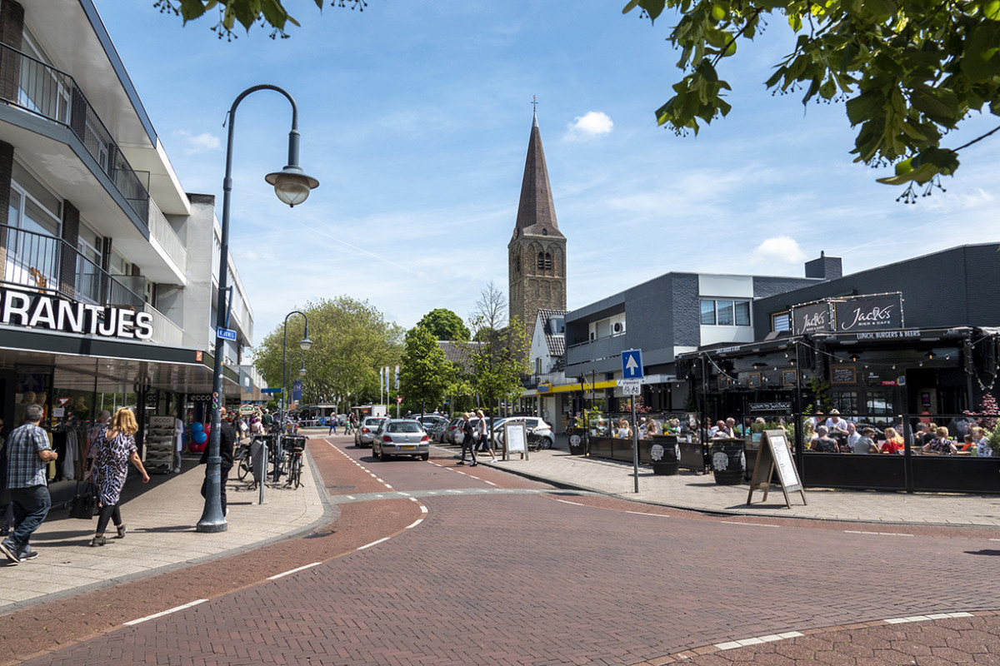
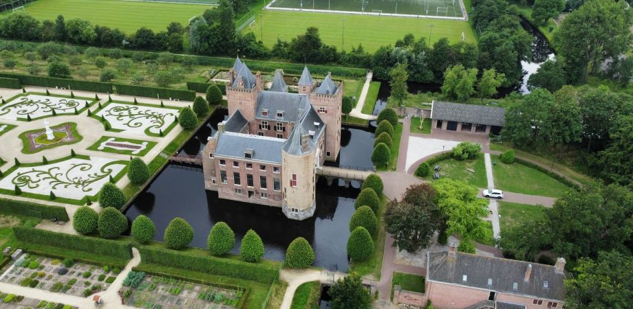

Feitjes over Heemskerk
- Kasteel Heemskerk
- Natuurgebied
- Historisch centrum
- Evenementen en Feesten
- Verbonden met de zee
Welkom in Heemskerk! 
Heemskerk is een plaats in de provincie Noord-Holland, Nederland. Het ligt ongeveer 20 kilometer ten noorden van Amsterdam en maakt deel uit van de gemeente Heemskerk, die in 2002 werd gevormd na de fusie van de voormalige gemeente Heemskerk met de gemeente Uitgeest. Heemskerk heeft een rijke geschiedenis die teruggaat tot de vroege middeleeuwen en staat bekend om zijn mooie omgeving en historische gebouwen.
Geschiedenis
Heemskerk heeft een lange geschiedenis die teruggaat tot de vroege middeleeuwen. Het gebied werd oorspronkelijk bewoond door de Friezen, en de naam Heemskerk betekent letterlijk "heim" (thuis) en "kerk" (kerk), wat mogelijk verwijst naar een vroege nederzetting rond een kerk. In de 13e eeuw werd de plaats een belangrijk centrum voor de lokale handel. Heemskerk heeft door de eeuwen heen diverse kastelen gekend, waarvan Kasteel Heemskerk een van de bekendste is.
Kasteel Heemskerk
Kasteel Heemskerk, een imposant kasteel uit de 14e eeuw, is een van de meest opvallende historische gebouwen van de stad. Het kasteel is goed bewaard gebleven en biedt bezoekers de mogelijkheid om te leren over de geschiedenis van het gebied en het kasteel zelf.
Natuur en omgeving
Heemskerk ligt dicht bij de duinen en de kust van Noord-Holland, waardoor het een populaire bestemming is voor wandelaars en natuurliefhebbers. Het is ook dichtbij het Noordzeestrand, dat makkelijk te bereiken is voor een dagje uit.
Bezienswaardigheden en cultuur
Heemskerk heeft een aantal andere interessante bezienswaardigheden, zoals de Grote Kerk, die oorspronkelijk in de 15e eeuw werd gebouwd. De stad heeft een rustige, landelijke sfeer, maar ligt ook dichtbij het bruisende Amsterdam, waardoor het een aantrekkelijke plek is voor zowel rustzoekers als mensen die de stad willen bezoeken.
De gemeente Heemskerk biedt ook allerlei faciliteiten, van winkelgebieden tot sportvoorzieningen, en heeft een actieve gemeenschap van bewoners en bezoekers.
Samenvattend is Heemskerk een charmante en historische plaats met een goede mix van natuur, cultuur en historische gebouwen, waardoor het zowel voor bewoners als bezoekers een aangename bestemming is.

Wat kan je doen in Heemskerk?
1. Bezoek Kasteel Heemskerk
Het Kasteel Heemskerk is een van de belangrijkste historische bezienswaardigheden in de regio. Dit middeleeuwse kasteel dateert uit de 14e eeuw en biedt een mooi kijkje in het verleden van Heemskerk. Je kunt het kasteel verkennen, wandelen door de tuinen, en soms zijn er rondleidingen en evenementen. Het is een prachtige plek voor zowel cultuur- als natuur liefhebbers.
2. Wandelen in de natuur
Heemskerk ligt in een mooi gebied met veel mogelijkheden voor buitenactiviteiten. Je kunt wandelen of fietsen in de omgeving, met name door de duinen en het natuurgebied Heemskerkse Duinen. De duinen bieden een prachtig uitzicht op de Noordzee en zijn een uitstekende plek voor een rustige wandeling of fietstocht.
3. Strand en duinen
Heemskerk ligt dicht bij de kust, en het nabijgelegen Noordzeestrand is ideaal voor een dagje uit. Je kunt genieten van een strandwandeling, zonnebaden, of zelfs een frisse duik in de zee, afhankelijk van het seizoen.
4. Bezoek de Grote Kerk
De Grote Kerk van Heemskerk is een historisch gebouw dat oorspronkelijk in de 15e eeuw werd gebouwd. Het is de moeite waard om te bezoeken voor de architectuur en de geschiedenis van de kerk. Soms zijn er ook culturele evenementen of concerten die in de kerk plaatsvinden.
5. Fietsen in de omgeving
De regio rond Heemskerk is ideaal voor fietstochten. Je kunt een fiets huren en de schilderachtige polders, duinen en het kustgebied verkennen. Er zijn verschillende fietsroutes die je langs mooie natuurgebieden en historische plekken brengen.
6. Shopping en horeca
In het centrum van Heemskerk kun je gezellig winkelen in de lokale winkels en boetieks. Ook zijn er diverse cafés en restaurants waar je kunt genieten van een lekkere lunch of diner. In de omgeving zijn er ook grotere winkelcentra als je meer variëteit zoekt.
7. Dagtrip naar Amsterdam
Omdat Heemskerk relatief dicht bij Amsterdam ligt (ongeveer 20 km), kun je makkelijk een dagtrip maken naar de hoofdstad van Nederland. Je kunt de beroemde musea zoals het Rijksmuseum of Van Gogh Museum bezoeken, of een wandeling maken door de grachten.
8. Golfen
In Heemskerk en de nabije omgeving zijn er diverse golfbanen. Bijvoorbeeld de Heemskerkse Golf Club, waar je kunt genieten van een rondje golf in een mooie, groene omgeving.
9. Sport en recreatie
Heemskerk heeft diverse sportfaciliteiten, waaronder een sportpark, een zwembad en een sporthal. Je kunt hier terecht voor sporten als tennis, voetbal, zwemmen of andere recreatieve activiteiten.
10. Evenementen en festivals
Heemskerk organiseert door het jaar heen verschillende evenementen en festivals, zoals markten, concerten en culturele festivals. Deze zijn een leuke manier om de lokale cultuur en sfeer van Heemskerk te ervaren.
Kortom, Heemskerk biedt een mix van cultuur, natuur en ontspanning, ideaal voor een dagje uit of een langer verblijf.